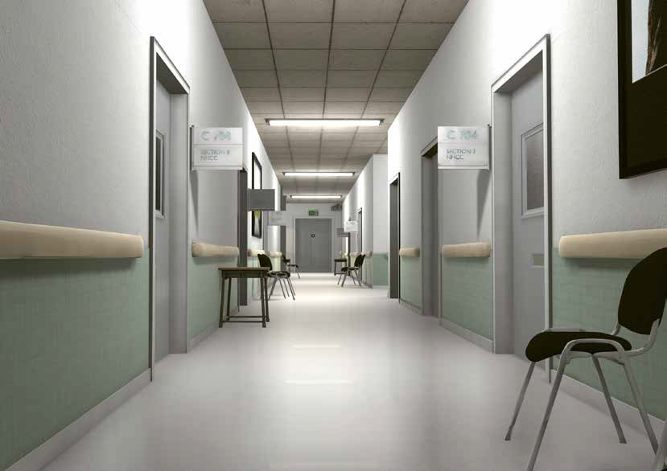

Oust us a top-down, twin-stick, local multiplayer, social deduction game for four players.
Players take control of agents of an oppressive government - the ODR.
They are tasked with locating and burning illegal art and literature.
However, one of the players is a western spy, trying to disrupt the operation. Will the ODR
prevail, or fall to the west?
Responsibility: Implementing game mechanics.
Created by: Nikolaj Schildt Christensen, Jacob Hvid Amstrup, Adam Ryde Ankarfeldt,
Adrian Radziszewski, Roman Karaba, and Lasse Korvig Bjerregaard.
Grappler
Grappler is a sidescroller where you have to get through caves as fast as possible using only
your trusty grappling hook.
You must take care, however, to not swing too high and meet the sharp stalactites, or too low
and touch the searing lava.
Responsibilities: Implementing the grappling hook, remixing sprites, and level design.
Created by: Oliver Leth Kristensen, Oliver Jørgensen, and Lasse Korvig Bjerregaard.
Northern Hope

Northern Hope is a 3D walking simulator, played through the eyes of a patient in a wheelchair
who lives and relives events over a period of 14 years, experiencing a care center as it evolves
from a closed theraputic institution to an abandoned prison.
Responsibilities: Implementing game mechanics and level white-boxing.
Created by: Nikolaj Schildt Christensen, Jacob Hvid Amstrup, Adam Ryde Ankarfeldt, Mike Graham
and Lasse Korvig Bjerregaard.
Master Thesis
Ray Traced Reflections In Virtual Reality
I did my thesis in a group of three people trying to implement ray traced reflections in virtual
reality in a way that would be more performant than fully ray tracing all reflections. To this
end we expanded Microsoft's "MiniEngine" with virtual reality and implemented the
following optimizations: Screen Space Reflections, Hybrid Screen Space Reflections, Temporal
Resolution Multiplexing, and Accelerated Stereo Rendering. Additionally, we extended Accelerated
Stereo Rendering to better handle reflections.
Created by: Daniel Gaard Hansen, Oliver Leth Kristensen, and Lasse Korvig Bjerregaard.
Hybrid Mono-Stereo Rendering for Virtual Reality
Hybrid Mono-Stereo Rendering for Virtual Reality is an optimization created by
Fink et al. in
2019. The general idea of the optimization is to reduce the power needed to render for
virtual reality. To do this, instead of rendering the whole scene twice – one time for each
eye, as is the normal approach – only what is near the camera is rendered twice and objects
further from the camera are rendered once.
In the "Graphics Programming" course at the IT-University of Copenhagen I chose to implement
this optimization in OpenGL.